发信人: Mammut (长毛萌犸象), 信区: outdoor
标 题: 神农架浮影
发信站: 饮水思源 (2013年08月01日21:31:22 星期四)
三天赶了1.6kkm的车程，山路崎岖又醉驾，困顿起来受惊吓。
留下照片不多也不算户外，基本是车上睡觉下来拍照的节奏。
但神农架毕竟有些额外意义。不知道是啥的快去补会史知识！
云中萌犸
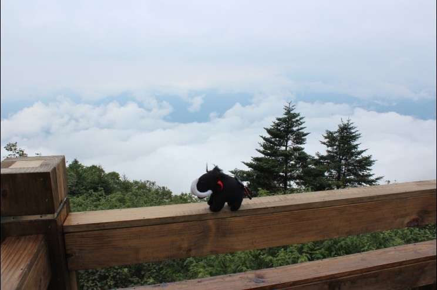 screen.width - 200){this.width = screen.width - 200}">
神农谷雾方散去，在武功的某山谷也遇到过
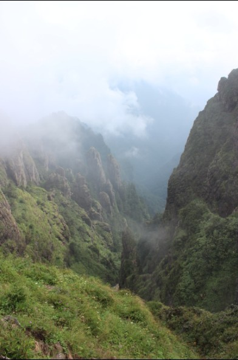 screen.width - 200){this.width = screen.width - 200}">
神农顶大牌子
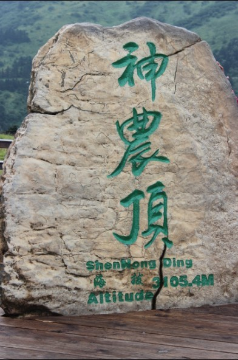 screen.width - 200){this.width = screen.width - 200}">
神农顶垭口景色
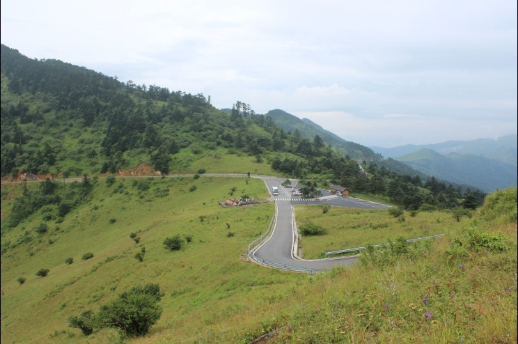 screen.width - 200){this.width = screen.width - 200}">
神农云
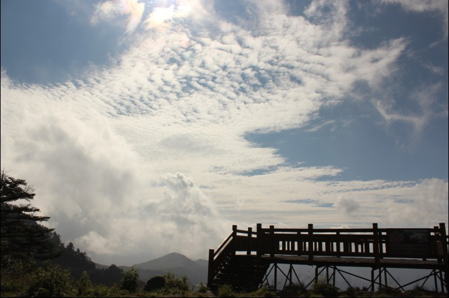 screen.width - 200){this.width = screen.width - 200}">
典型的鄂西大岩壁
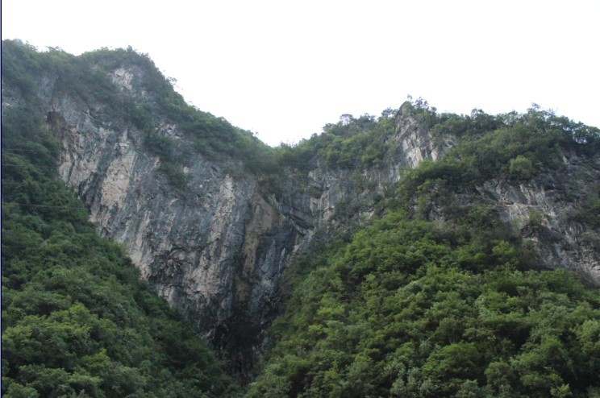 screen.width - 200){this.width = screen.width - 200}">
岩壁底
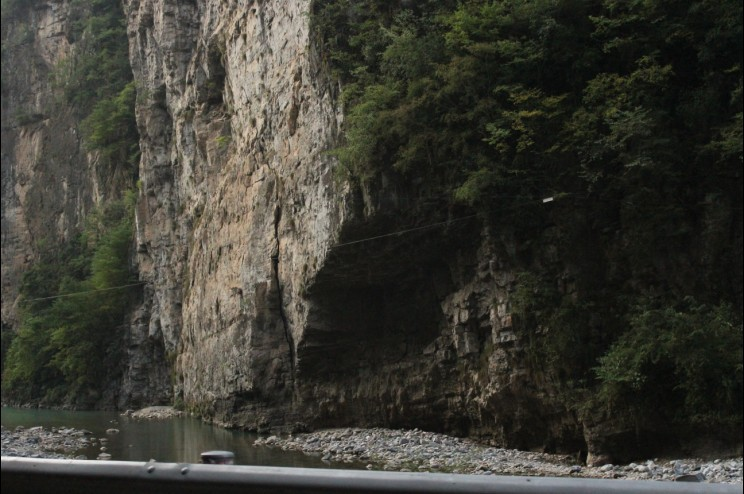 screen.width - 200){this.width = screen.width - 200}">
高山抱石摆一发
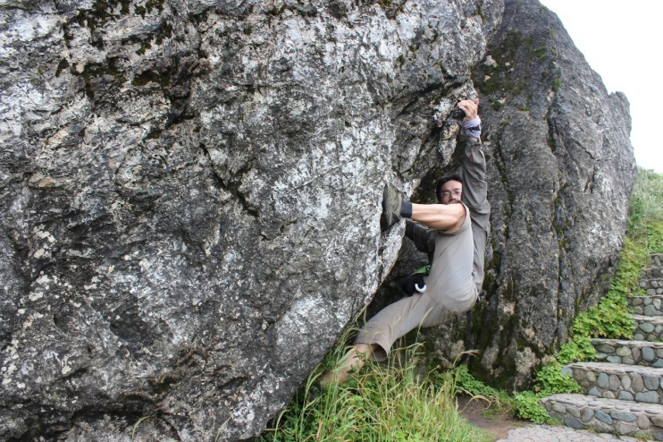 screen.width - 200){this.width = screen.width - 200}">
一柱擎天hohoho
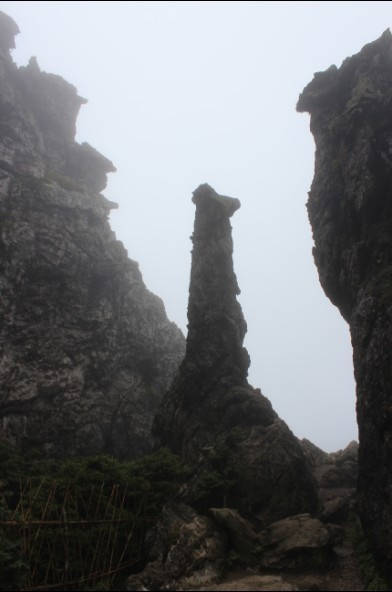 screen.width - 200){this.width = screen.width - 200}">
高山湿地来一发
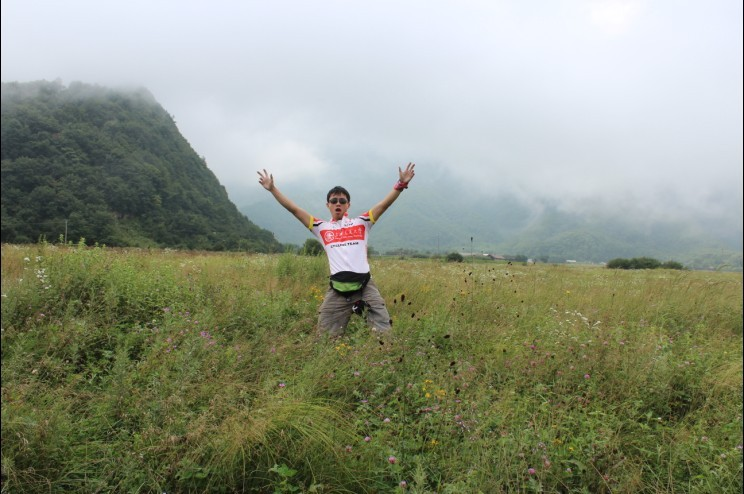 screen.width - 200){this.width = screen.width - 200}">
高山之猪的光影
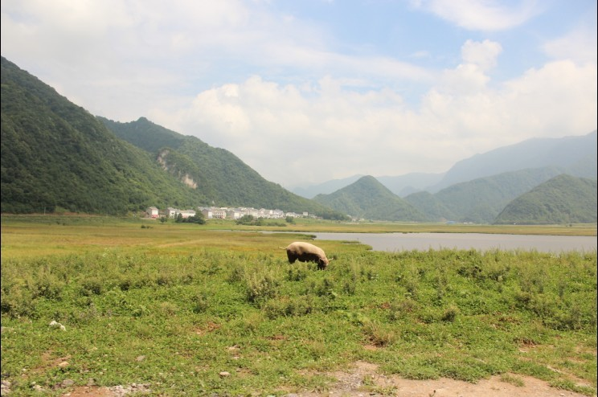 screen.width - 200){this.width = screen.width - 200}">
附带一张三峡风光，车上照的
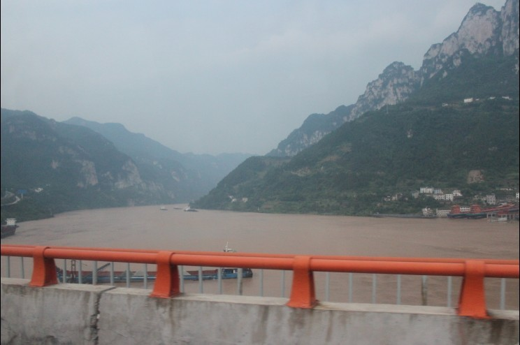 screen.width - 200){this.width = screen.width - 200}">
--
亮！骚！
※ 来源:·饮水思源 bbs.sjtu.edu.cn·[FROM: 113.57.190.22]
|